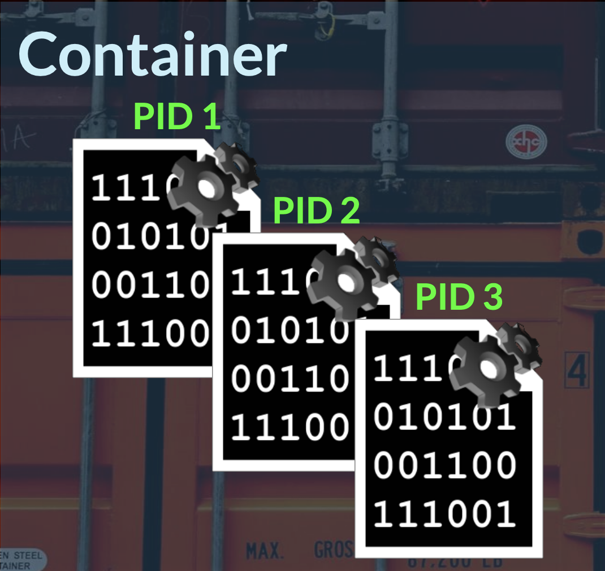
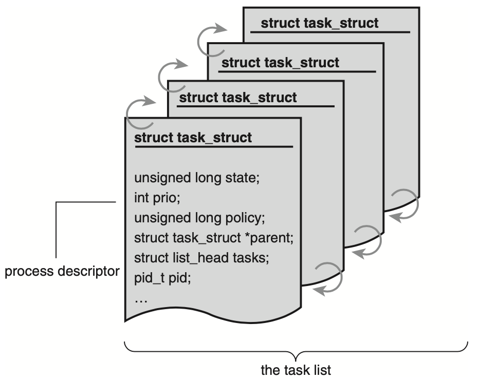
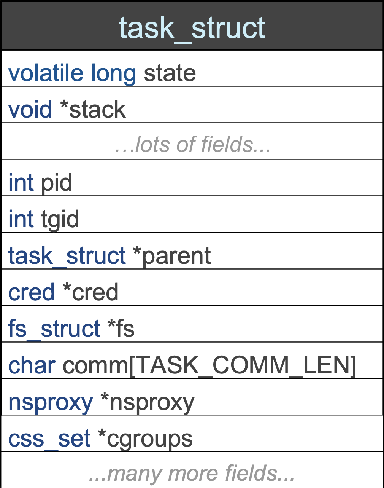
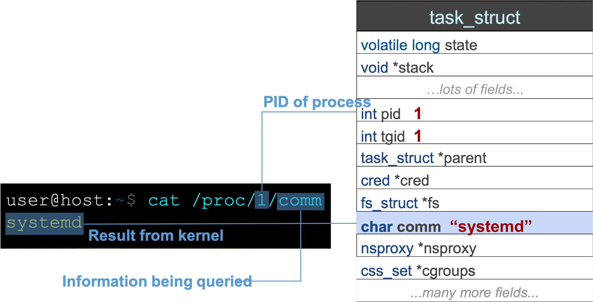
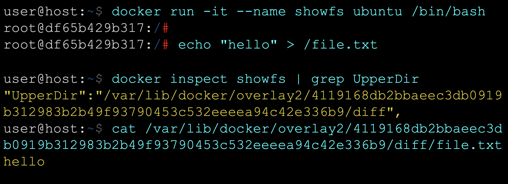
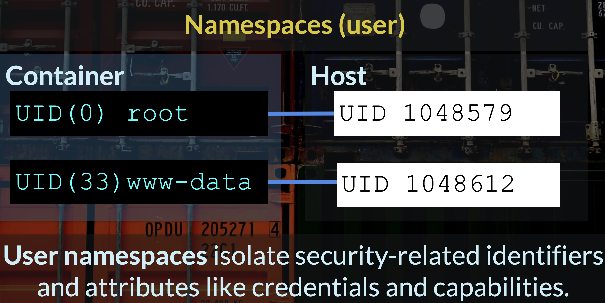
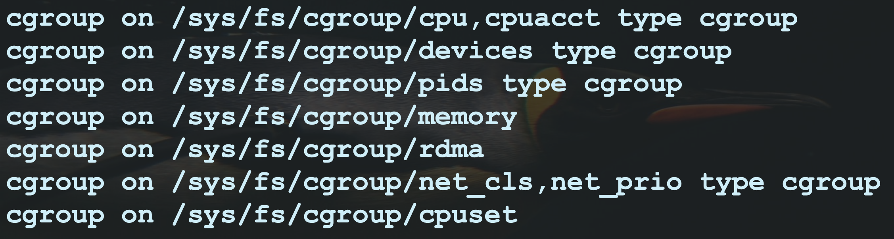
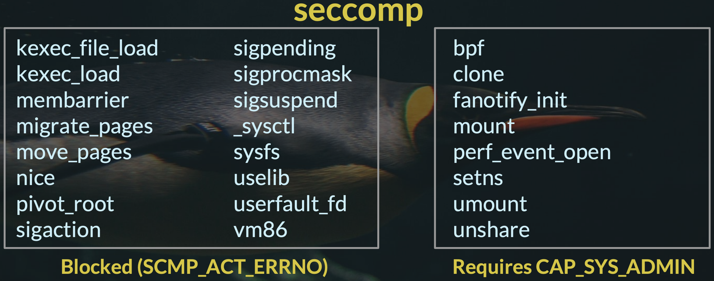
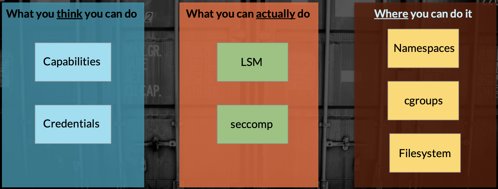

Container is a task, or set of tasks, with special properties to isolate the task(s), and restrict access to system resources.

Process descriptor and the task structure
The kernel stores the list of processes in a circular doubly linked list called the task list.

Each element in the task list is a process descriptor of the type struct task_struct. The process descriptor contains all the information about a specific process.

/proc

/proc is a special filesystem mount (procfs) for accessing system and process information directly from the kernel by reading "file" entries.

Properties
Credentials
Credentials is process identifiers. Credentials describe the user identity of a task, which determine its permissions for shared resources such as files, semaphores, and shared memory.
All of a task's credentials are held in a refcounted structure of type struct cred. Each task points to its credentials by a pointer called cred in its task_struct.
Traditional UNIX implementations of permissions distinguish two categories:
- privileged processes with user ID of 0 (root)
- every other process
Capabilities
Since kernel 2.2, Linux divides the privileges associated with superuser into distinct units known as capabilities.
Linux capabilities were introduced as a way to break the role of root down into discrete subsections, which could be granted to non-root processes to allow them to perform privileged actions.
A process has a concept of a "permitted set" of capabilities, which acts as a limiting superset for the capabilities it can have. Importantly, and by default, this bounding set is carried over to any child process, so the "init" process of the container creates a limiting set of capabilities for all processes inside the container (as all processes descend from PID 1).
Containers are tasks which run should run with a restricted set of capabilities.
To view a list of capabilities, you can use capsh:
$ capsh --print
Filesystem
The filesystem root for a container is (usually) isolated from other containers and host's root filesystem via the pivot_root syscall.
The container's root mount is often planted in a container-specialized filesystem, such as AUFS or OverlayFS. In case of OverlayFS, the container's root of / really lives in /var/lib/docker/overlay2.

Namespaces
A namespace wraps a global system resource in an abstraction that makes it appear to the processes within the namespace that they have their own isolated instance of the global resource. Changes to the global resource are visible to other processes that are members of the namespace, but are invisible to other processes.
There are 8 types of namespaces available on Linux.
| Namespace | Isolates |
|---|---|
| Cgroup | Cgroup root directory |
| IPC | Provides namespaced versions of SystemV IPC and POSIX message queues. |
| Network | Provides a namespaced and isolated network stack. The majority of container use-cases involve networked services, so this will prove to be a core feature of containers. |
| Mount | Provides a namespaced view of mount points. Combined with the pivot_root() syscall, this will be used to isolate the container's filesystem from the host's filesystem. |
| PID | Provides a namespaced tree of process IDs (PIDs). This allows each container to have a full isolated process tree, in which it has an ‘init’ process that it runs as PID 1 inside this namespace. Processes running in a container will have a different PID on the host than they do inside the container’s PID namespace. |
| Time | Boot and monotonic clocks. |
| User | Provides a namespaced version of User IDs (UIDs) and Group IDs (GIDs). This is one of the most important features of modern container systems, as it is used to provide "unprivileged containers". These are containers in which root (UID 0) inside the container is not root outside the container, greatly increasing the container's security. |
| UTS | Provides a namespaced version of system identifiers. |

Creation of new namespaces using clone(2) and unshare(2) in most cases requires the CAP_SYS_ADMIN capability. User namespaces are the exception: since Linux 3.8, no privilege is required to create a user namespace.
Each process has a /proc/[pid]/ns/ subdirectory containing one entry for each namespace.
Cgroups
Cgroups is a Linux control groups.
Control groups, usually referred to as cgroups, are a Linux kernel feature which allow processes to be organized into hierarchical groups whose usage of various types of resources can then be limited and monitored. The kernel's cgroup interface is provided through a pseudo-filesystem called cgroupfs, where hierarchy is expressed through the directory tree in each mount.

Grouping is implemented in the core cgroup kernel code, while resource tracking and limits are implemented in a set of per-resource-type subsystems (memory, CPU, and so on).
A cgroup filesystem initially contains a single root cgroup, /, which all processes belong to. A new cgroup is created by creating a directory in the cgroup filesystem.
$ mkdir /sys/fs/cgroup/cpu/cg1
This creates a new empty cgroup. A process may be moved to this cgroup by writing its PID into the cgroup's cgroup.procs file:
$ echo $$ > /sys/fs/cgroup/cpu/cg1/cgroup.procs
Linux Security Modules
AppArmor and SELinux are Linux security modules providing Mandatory Access Control (MAC), where access rules for a program are described by a profile.
Docker and LXC enable a default LSM profile in enforcement mode, which mostly serves to restrict a container's access to sensitive /proc and /sys entries.
The profile also denies mount syscall.
seccomp
Since kernel 3.17, Linux has a mechanism for filtering access to system calls through the seccomp subsystem.

Seccomp policies come in two versions:
- Strict mode - is a small set of allowed system calls which cannot be customized.
- Filter mode - system call filters are written as Berkeley Packet Filter (BPF) programs; this allows more finely-grained policies to be set on system call usage (with some caveats, seccomp-bpf filters can inspect syscall arguments, but cannot dereference pointers).
Container security model
